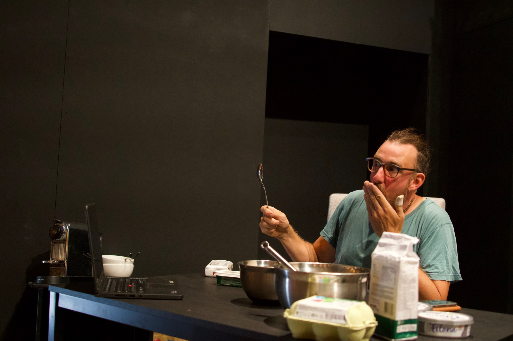
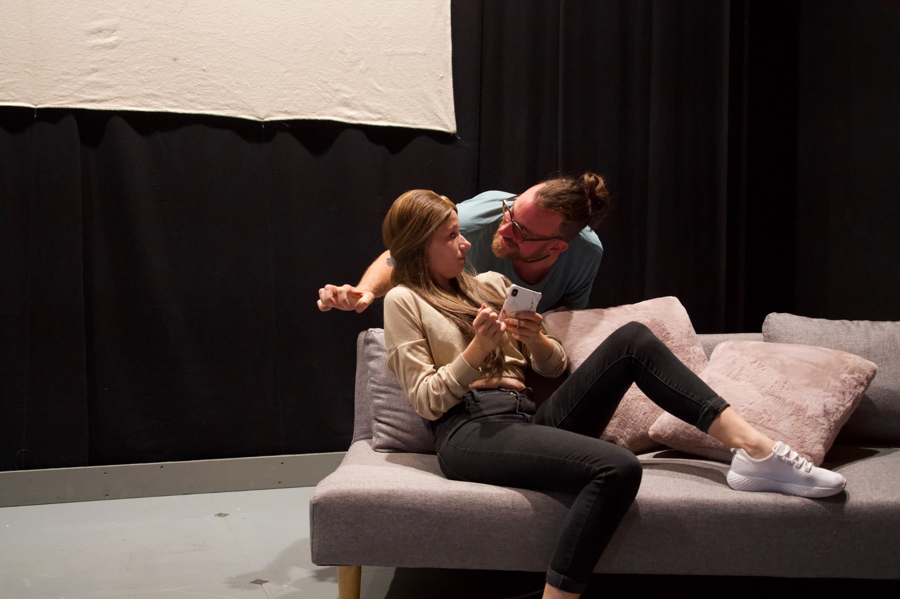
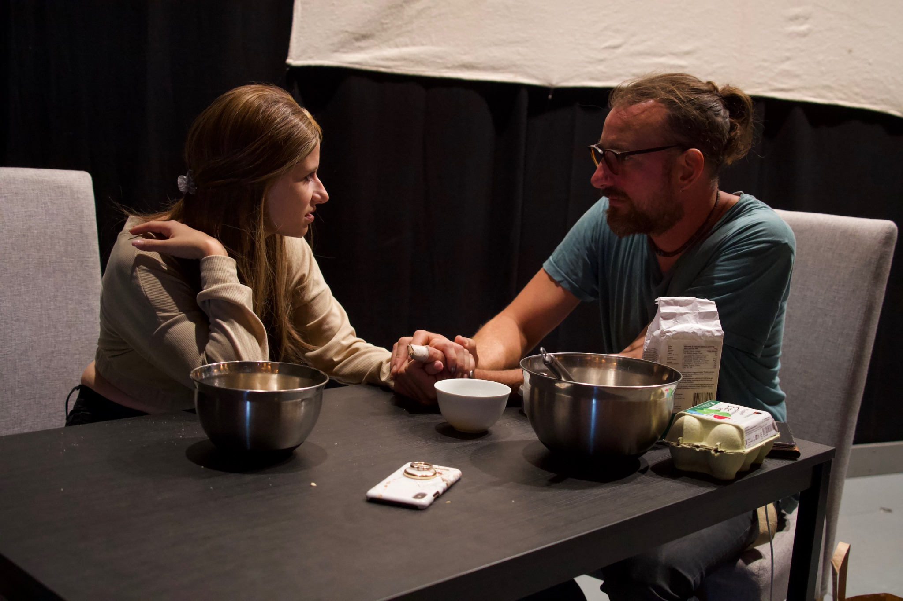

#LoveU
2023 präsentierte die Freie Bühne Basel im Theater Tabourettli Basel sowie Theater Bau 3 Basel an zwei Wochenenden das Stück «#LoveU» von Benjamin Zimber und Carolin Pfäffli.
Inhalt:
Was geschieht mit Menschen, wenn sie abrupt aus ihrer gewohnten Lebenswelt gerissen werden?
Larissa und Timo sind ein junges Influencer-Paar, das in einer glitzernden Social Media-Welt lebt. Ein totaler Stromausfall bringt sie in eine Lage, mit welcher sie noch nie konfrontiert waren – und zwingt sie zu neuen Perspektiven.
In der sich nun präsentierenden, chaotischen Realität drängen sich neue Fragen auf: Wer sind sie wirklich, jenseits ihrer perfekt inszenierten Online-Existenz?
Ein fesselndes Theaterstück, das auf humorvolle Art ganz neue, digitale und analoge Grenzen von Identität und Selbsterkenntnis erkundet und das von der Freien Bühne mit Augenzwinkern gerne als Social-Media-Drama bezeichnet wird.
Besetzung
Larissa: Carolin Pfäffli
Timo: Benjamin Zimber
Team
Regie: Jasmin Wenger
Produktionsleitung: Haris Mujagic
Galerie


